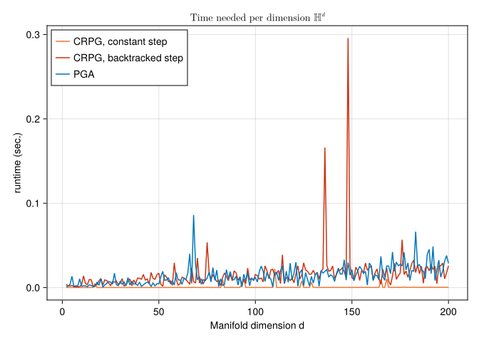
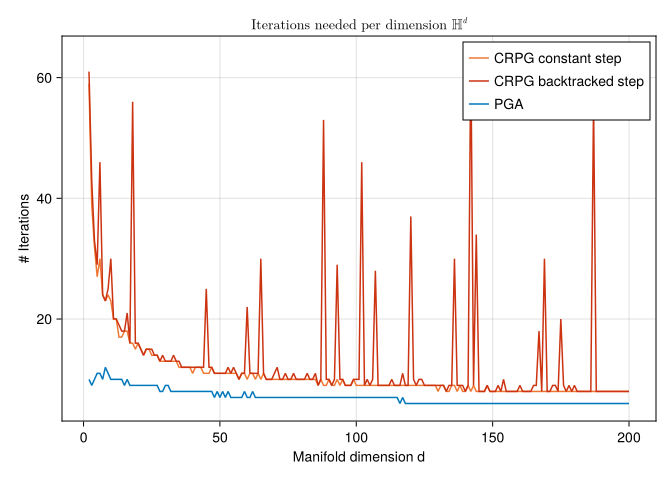

The Constrained mean on high-dimensional Hyperbolic space.
Hajg Jasa, Ronny Bergmann 2026-04-06
Introduction
This example is to be thought of as a continuation of the Constrained Mean on Hyperbolic Space, where we compare the Intrinsic Convex Riemannian Proximal Gradient Method (CRPG) from [BJJP25a] with the Projected Gradient Algorithm (PGA) as introduced in [BFNZ25]. For CRPG, we test performances of both constant and backtracked stepsize strategies.
using Chairmarks, CSV, DataFrames, Manifolds, Manopt, CairoMakie, Random
import ColorSchemes.tol_vibrantConsider the constrained Riemannian center of mass for a given set of points ``q_i M$ $i=1,\ldots,N$ given by
\[\operatorname*{arg\,min}_{p\in\mathcal C} \sum_{i=1}^N d_{\mathrm{M}}^2(p,q_i)\]
constrained to a set $\mathcal C \subset \mathcal M$.
The same problem can be formulated as an unconstrained optimization problem by introducing the characteristic function for the set $\mathcal C$:
\[\operatorname*{arg\,min}_{p\in\mathcal M} \sum_{i=1}^N d_{\mathrm{M}}^2(p,q_i) + \chi_{\mathcal C}(p)\]
where $\chi_{\mathcal C}(p) = 0$ if $p \in \mathcal C$ and $\chi_{\mathcal C}(p) = \infty$ otherwise. This formulation allows us to use CRPG to solve the problem.
For this experiment set $\mathcal M = \mathbb H^d$ for $d=2,\ldots,200$, the Hyperbolic space and the constrained set $\mathcal C = C_{c,r}$ as the ball of radius $r$ around the center point $c$, where we choose here $r=\frac{1}{\sqrt{n}}$ and $c = (0,\ldots,0,1)^{\mathrm{T}}$ and a $σ = \frac{3}{2}n^{1/4}$.
n_range = Vector(2:200)
radius_range = [1 / sqrt(n) for n in n_range]
N_range = [400 for n ∈ n_range]
M_range = [Hyperbolic(n) for n ∈ n_range]
σ_range = [ 1.5/sqrt(sqrt(n-1)) for n ∈ n_range]
tol = 1e-7The data consists of $N=200$ points, where we skew the data a bit to force the mean to be outside of the constrained set $\mathcal C$.
Cost, gradient and projection
We can formulate the constrained problem above in two different forms. Both share a cost and require a gradient. For performance reasons, we also provide a mutating variant of the gradient
f(M, p; pts=[]) = 1 / (2 * length(pts)) .* sum(distance(M, p, q)^2 for q in pts)
grad_f(M, p; pts=[]) = -1 / length(pts) .* sum(log(M, p, q) for q in pts)
function grad_f!(M, X, p; pts=[])
zero_vector!(M, X, p)
Y = zero_vector(M, p)
for q in pts
log!(M, Y, p, q)
X .+= Y
end
X .*= -1 / length(pts)
return X
endWe can model the constraint either with an inequality constraint $g(p) \geq 0$ or using a projection onto the set. For the gradient of $g$ and the projection we again also provide mutating variants. Lastly, we define the cost function $F$ as the sum of the original cost and the characteristic function for the set $\mathcal C$.
g(M, p; op=[], radius=1) = distance(M, op, p)^2 - radius^2;
# The characteristic function for the set C is defined with tol^2 to avoid numerical issues
characteristic_C(M, p; op=[], radius=1) = (g(M, p; op=op, radius=radius) ≤ tol^2) ? 0 : Inf;
function project_C(M, p; op=[], radius=1)
X = log(M, op, p)
n = norm(M, op, X)
q = (n > radius) ? exp(M, op, (radius / n) * X) : copy(M, p)
return q
end;
function project_C!(M, q, p; radius=1, op=[], X=zero_vector(M, op))
log!(M, X, op, p)
n = norm(M, op, X)
if (n > radius)
exp!(M, q, op, (radius / n) * X)
else
copyto!(M, q, p)
end
return q
end;
grad_g(M, p; op=[]) = -2 * log(M, p, op)
function grad_g!(M, X, p; op=[])
log!(M, X, p, op)
X .*= -2
return X
end
F(M, p; pts=[], radius=1, op=[]) = f(M, p; pts=pts) + characteristic_C(M, p; op=op, radius=radius)The mean
For comparison, we first compute the Riemannian center of mass, that is the minimization above but not constrained to $\mathcal C$. We can then project this onto $\mathcal C$. For the projected mean we obtain $g(p) = 0$ since the original mean is outside of the set, the projected one lies on the boundary.
We first generate all data
centers = [[zeros(n)..., 1.0] for n in n_range]
begin
Random.seed!(5)
data = [
[
exp(
M,
c,
get_vector(
M, c, σ * randn(n) .+ 2 * r .* ones(n), DefaultOrthonormalBasis()
),
) for _ in 1:N
] for
(c, r, n, N, M, σ) in zip(centers, radius_range, n_range, N_range, M_range, σ_range)
]
endmeans = [mean(M, d) for (M, d) in zip(M_range, data)]
dc = [
characteristic_C(M, m; op=c, radius=r) for
(M, m, c, r) in zip(M_range, means, centers, radius_range)
]
minimum(dc) # Sanity Check, this should be infInfProj_means = [
project_C(M, m; op=c, radius=r) for
(M, m, c, r) in zip(M_range, means, centers, radius_range)
]
# Samll sanity check, these should all be about zero
ds = [distance(M, m, c) - r for (M, m, c, r) in zip(M_range, Proj_means, centers, radius_range)]
maximum(abs.(ds))1.1102230246251565e-16The experiment
First, we define a single test function for one set of data for a manifold
function bench_aep(Manifold, center, radius, data)
# local functions
_f(M, p) = f(M, p; pts=data)
_grad_f!(M, X, p) = grad_f!(M, X, p; pts=data)
_proj_C!(M, q, p) = project_C!(M, q, p; radius=radius, op=center)
_F(M, p) = F(M, p; pts=data, radius=radius, op=center)
_prox_I!(M, q, λ, p) = _proj_C!(M, q, p)
# Copmute the Lipschitz constant of the gradient of f for the stepsize
D = 2 * maximum([distance(Manifold, center, pt) for pt in data])
L_f = Manopt.ζ_1(-1, D)
constant_stepsize = 1 / L_f
initial_stepsize = constant_stepsize
contraction_factor = 0.9
warm_start_factor = 10.0
#
# returns
stats = Dict(:CRPG_CN => Dict(), :CRPG_BT => Dict(), :PGA => Dict())
#
mean_crpg_cn = copy(Manifold, center)
crpg_cn = proximal_gradient_method!(
Manifold,
_F,
_f,
_grad_f!,
mean_crpg_cn;
prox_nonsmooth=_prox_I!,
evaluation=InplaceEvaluation(), return_state=true,
record=[:Iteration, :Cost],
stepsize=ConstantLength(
constant_stepsize,
),
stopping_criterion=StopWhenGradientMappingNormLess(tol)|StopAfterIteration(5000),
)
stats[:CRPG_CN][:Iter] = length(get_record(crpg_cn, :Iteration))
stats[:CRPG_CN][:Cost] = get_record(crpg_cn)
#
# Backtracked stepsize
mean_crpg_bt = copy(Manifold, center)
crpg_bt = proximal_gradient_method!(
Manifold,
_F,
_f,
_grad_f!,
mean_crpg_bt;
prox_nonsmooth=_prox_I!,
evaluation=InplaceEvaluation(), return_state=true,
record=[:Iteration, :Cost],
stepsize=ProximalGradientMethodBacktracking(;
contraction_factor=contraction_factor,
initial_stepsize=initial_stepsize,
stop_when_stepsize_less=tol,
strategy=:convex,
warm_start_factor=warm_start_factor,
),
stopping_criterion=StopWhenGradientMappingNormLess(tol)|StopAfterIteration(5000),
)
stats[:CRPG_BT][:Iter] = length(get_record(crpg_bt, :Iteration))
stats[:CRPG_BT][:Cost] = get_record(crpg_bt)
#
mean_pga = copy(Manifold, center)
pgas = projected_gradient_method!(
Manifold,
_f,
_grad_f!,
_proj_C!,
mean_pga;
evaluation=InplaceEvaluation(),
record=[:Iteration, :Cost],
stopping_criterion=StopAfterIteration(150) |
StopWhenProjectedGradientStationary(Manifold, tol),
return_state=true,
)
stats[:PGA][:Iter] = length(get_record(pgas, :Iteration))
stats[:PGA][:Cost] = get_record(pgas)
#
#
# Benchmarks
crpg_b_cn = @be proximal_gradient_method!($Manifold, $_F, $_f, $_grad_f!,
$(copy(Manifold, center)); prox_nonsmooth=$_prox_I!, evaluation=$(InplaceEvaluation()),
stepsize=$(ConstantLength(
constant_stepsize,
)),
stopping_criterion=$(StopWhenGradientMappingNormLess(tol)|StopAfterIteration(5000)),
) evals = 1 samples = 10 seconds = 100
stats[:CRPG_CN][:time] = mean(crpg_b_cn).time
crpg_b_bt = @be proximal_gradient_method!($Manifold, $_F, $_f, $_grad_f!,
$(copy(Manifold, center)); prox_nonsmooth=$_prox_I!, evaluation=$(InplaceEvaluation()),
stepsize=$(ProximalGradientMethodBacktracking(;
strategy=:convex,
initial_stepsize=initial_stepsize,
stop_when_stepsize_less=tol,
contraction_factor=contraction_factor,
)),
stopping_criterion=$(StopWhenGradientMappingNormLess(tol)|StopAfterIteration(5000)),
) evals = 1 samples = 10 seconds = 100
stats[:CRPG_BT][:time] = mean(crpg_b_bt).time
#
pga_b = @be projected_gradient_method!($Manifold, $_f, $_grad_f!, $_proj_C!,
$(copy(Manifold, center)); evaluation=$(InplaceEvaluation()),
stopping_criterion=$(
StopAfterIteration(150) | StopWhenProjectedGradientStationary(Manifold, tol)
),
) evals = 1 samples = 10 seconds = 100
stats[:PGA][:time] = mean(pga_b).time
return stats
endbench_aep (generic function with 1 method)and run these
The resulting plot of runtime is
fig = Figure()
axis = Axis(fig[1, 1]; title=L"\text{Time needed per dimension }$\mathbb{H}^d$")
lines!(axis, n_range, [bi[:CRPG_CN][:time] for bi in b]; label="CRPG, constant step", color=tol_vibrant[1],)
lines!(axis, n_range, [bi[:CRPG_BT][:time] for bi in b]; label="CRPG, backtracked step", color=tol_vibrant[5],)
lines!(axis, n_range, [bi[:PGA][:time] for bi in b]; label="PGA", color=tol_vibrant[2],)
axis.xlabel = "Manifold dimension d"
axis.ylabel = "runtime (sec.)"
axislegend(axis; position=:lt)
fig
and the number of iterations reads
fig2 = Figure()
axis2 = Axis(fig2[1, 1]; title=L"\text{Iterations needed per dimension }$\mathbb{H}^d$")
lines!(axis2, n_range, [bi[:CRPG_CN][:Iter] for bi in b]; label="CRPG constant step", color=tol_vibrant[1])
lines!(axis2, n_range, [bi[:CRPG_BT][:Iter] for bi in b]; label="CRPG backtracked step", color=tol_vibrant[5],)
lines!(axis2, n_range, [bi[:PGA][:Iter] for bi in b]; label="PGA", color=tol_vibrant[2],)
axis2.xlabel = "Manifold dimension d"
axis2.ylabel = "# Iterations"
axislegend(axis2; position=:rt)
fig2
Literature
- [BFNZ25]
- R. Bergmann, O. P. Ferreira, S. Z. Németh and J. Zhu. On projection mappings and the gradient projection method on hyperbolic space forms. Preprint, in preparation (2025).
- [BJJP25a]
- R. Bergmann, H. Jasa, P. J. John and M. Pfeffer. The Intrinsic Riemannian Proximal Gradient Method for Convex Optimization, preprint (2025), arXiv:2507.16055.
Technical details
This tutorial is cached. It was last run on the following package versions.
Status `~/Repositories/Julia/ManoptExamples.jl/examples/Project.toml`
[6e4b80f9] BenchmarkTools v1.6.0
[336ed68f] CSV v0.10.15
[13f3f980] CairoMakie v0.15.3
[0ca39b1e] Chairmarks v1.3.1
[35d6a980] ColorSchemes v3.30.0
⌅ [5ae59095] Colors v0.12.11
[a93c6f00] DataFrames v1.7.0
[7073ff75] IJulia v1.29.0
[682c06a0] JSON v0.21.4
[8ac3fa9e] LRUCache v1.6.2
[b964fa9f] LaTeXStrings v1.4.0
[d3d80556] LineSearches v7.4.0
[ee78f7c6] Makie v0.24.3
[af67fdf4] ManifoldDiff v0.4.4
[1cead3c2] Manifolds v0.10.22
[3362f125] ManifoldsBase v1.2.0
[0fc0a36d] Manopt v0.5.20
[5b8d5e80] ManoptExamples v0.1.14 `..`
[51fcb6bd] NamedColors v0.2.3
⌃ [91a5bcdd] Plots v1.40.16
[08abe8d2] PrettyTables v2.4.0
⌃ [6099a3de] PythonCall v0.9.25
[f468eda6] QuadraticModels v0.9.13
[1e40b3f8] RipQP v0.7.0
Info Packages marked with ⌃ and ⌅ have new versions available. Those with ⌃ may be upgradable, but those with ⌅ are restricted by compatibility constraints from upgrading. To see why use `status --outdated`This tutorial was last rendered July 26, 2025, 19:50:9.